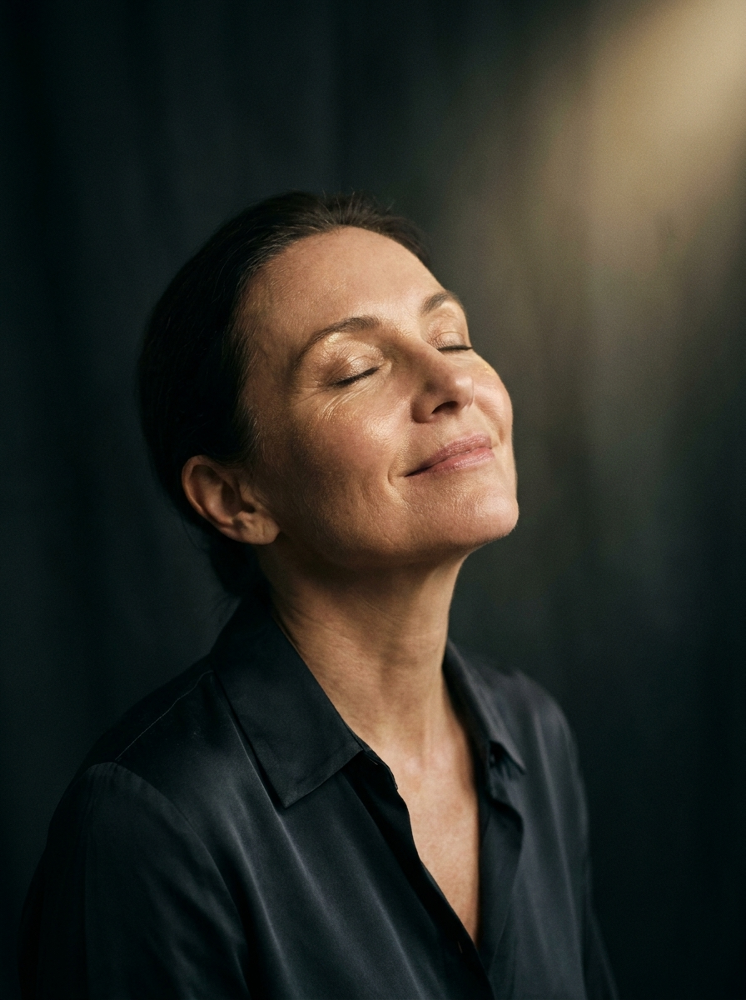

Die Longevity-Anamnese bei AUREA ist ein ausführliches ärztliches Gespräch, das Ihre Haut, Ihren Lebensstil und Ihre persönlichen Ziele zusammenführt. Ruhig, gründlich und ganz auf Sie abgestimmt – als Grundlage für gesunde, gepflegte Haut über die Jahre.
Die Haut ist unser grösstes Organ – und oft das erste, das Veränderungen sichtbar macht. Hautalterung, Lebensgewohnheiten und das allgemeine Wohlbefinden hängen enger zusammen, als viele vermuten. Longevity-Dermatologie betrachtet die Haut deshalb nicht isoliert, sondern als Teil eines grösseren Bildes.
Die Longevity-Anamnese ist das ausführliche Erstgespräch, das diesem Ansatz vorausgeht. Dr. med. Carla Brunner nimmt sich Zeit, Ihre Hautgeschichte, relevante Lebensstil-Faktoren und Ihre Erwartungen sorgfältig zu erfassen – als Grundlage für sinnvolle, gut abgestimmte nächste Schritte. Es geht nicht um Versprechen, sondern um fundierte ärztliche Einordnung und Begleitung, die zu Ihnen passt.
Strukturierte Beurteilung von Hauttyp, Hautzustand und sichtbaren Alterungszeichen – wo sinnvoll ergänzt durch apparative Verfahren.
Ernährung, Schlaf, Stress, Bewegung, Sonnenverhalten und Pflege beeinflussen, wie die Haut altert. Wir besprechen realistische Massnahmen.
Gepflegte, gesunde Haut ist die Basis jeder ästhetischen Behandlung. Wir besprechen Ihre Wünsche offen – im medizinisch sinnvollen Rahmen.
Hautgesundheit ist ein Weg, kein einmaliges Ereignis. Auf Wunsch begleiten wir Sie über die Jahre und passen Empfehlungen an Ihre Lebensphase an.
Nach Ihrer Anfrage erhalten Sie unseren digitalen Anamnese-Fragebogen. So machen Sie in Ruhe und diskret von zu Hause aus Angaben zu Haut, Gesundheit und Anliegen – das schafft im Gespräch mehr Zeit für das Wesentliche.
Im persönlichen Gespräch mit Dr. med. Carla Brunner gehen wir Ihre Hautgeschichte, relevante Vorerkrankungen, Lebensgewohnheiten und Ziele durch. Sie haben Raum für alle Fragen – ohne Zeitdruck.
Es folgt die strukturierte Begutachtung Ihrer Haut. Hauttyp, Hautzustand, Feuchtigkeit, Lichtschäden und auffällige Hautstellen werden beurteilt – wo angezeigt mit ergänzenden Messverfahren.
Wir besprechen die Ergebnisse verständlich und ehrlich. Gemeinsam halten wir sinnvolle nächste Schritte fest – von Pflege und Prävention über Vorsorge bis zu möglichen ästhetischen Optionen.
Auf Wunsch begleiten wir Sie langfristig. In vereinbarten Abständen prüfen wir die Entwicklung Ihrer Haut, dokumentieren Veränderungen und passen Empfehlungen an.
Bestimmung von Hauttyp, Empfindlichkeit, Talg- und Feuchtigkeitsbalance sowie aktuellem Hautbild als Ausgangspunkt jeder Beurteilung.
Einschätzung sonnenbedingter Hautveränderungen wie Pigmentflecken und vorzeitiger Hautalterung sowie Ihres bisherigen Schutzverhaltens.
Beurteilung von Feuchtigkeitsgehalt und Schutzfunktion der Haut – zentrale Faktoren für Widerstandskraft und Hautqualität.
Erfassung von Ernährung, Schlaf, Stress, Bewegung, Genussmitteln und Pflegegewohnheiten, die das Hautbild über die Jahre mitprägen.
Relevante Vorerkrankungen, Hauterkrankungen in der Familie, Allergien und Medikamente, um Ihre Hautgesundheit im Gesamtbild einzuordnen.
Ihre persönlichen Anliegen, Wünsche und Erwartungen – damit Empfehlungen nicht nur medizinisch fundiert, sondern auch für Sie stimmig sind.
«Longevity beginnt nicht mit einer Behandlung, sondern mit Verstehen. Erst wenn ich Ihre Haut und Ihren Alltag kenne, kann ich ehrlich beraten.»
Dieser Fragebogen hilft uns, Sie und Ihre Haut vor dem Erstgespräch besser kennenzulernen. Bitte füllen Sie ihn in Ruhe aus – alle Angaben sind freiwillig und werden streng vertraulich behandelt.
Schritt für Schritt zu Ihrem persönlichen Erstgespräch.
Die Longevity-Anamnese ist ein ausführliches ärztliches Erst- und Beratungsgespräch mit strukturierter Hautbeurteilung. Sie dient dazu, Ihre Hautgesundheit ganzheitlich einzuordnen und sinnvolle nächste Schritte zu besprechen. Sie ersetzt keine akute Behandlung, schafft aber eine fundierte Grundlage für Vorsorge und Begleitung.
Planen Sie für das Erstgespräch ausreichend Zeit ein – wir legen Wert darauf, ohne Eile vorzugehen. Nach dem Vorab-Fragebogen folgen das persönliche Gespräch, die Hautanalyse und eine verständliche Einordnung der Ergebnisse mit konkreten Empfehlungen.
Nein. Seriöse Dermatologie kennt keine Garantien. Wir geben Ihnen eine ehrliche, individuelle Einschätzung und besprechen Optionen offen. Welche Schritte sinnvoll sind, entscheiden Sie gemeinsam mit Dr. med. Carla Brunner – ohne Druck.
Alle Angaben werden streng vertraulich und im Rahmen der ärztlichen Schweigepflicht sowie der geltenden Datenschutzbestimmungen (revDSG/DSGVO) verarbeitet. Ihre Daten dienen ausschliesslich der Vorbereitung und Durchführung Ihrer Beratung und werden nicht an Dritte weitergegeben. Details in der Datenschutzerklärung.
Vereinbaren Sie Ihr persönliches Longevity-Anamnese-Gespräch bei AUREA in Schwyz. Wir nehmen uns Zeit für Sie – diskret, gründlich und auf Augenhöhe.